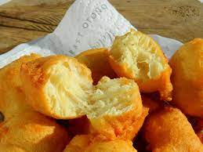

Ustipci

Ove je ustipke mama pripremala obicno
vikendom za dorucak nakon kojeg
se svi razletimo svojim poslom i ne moramo brinuti
do vecere sta cemo jesti :)
Recept je po prvi put stavljen u normativ,
jer se priprema sa starim dobrim "odokativnim"
:) mjerama.
sastojci za 4 osobe:
- 4 solje brasna
- 1 kasika prasak za pecivo
- 1 kasika sol
- 2 komada jaja
- 1/2 solje mlijeka
- 1 solja vode
Steps:
- Umutiti sve sastojke
- U serpu nasuti oko tri prsta ulja (preporucuje se manja serpa, dakle do 20cm, cisto radi ustede)
- Pecite ustipke dok ne porumene